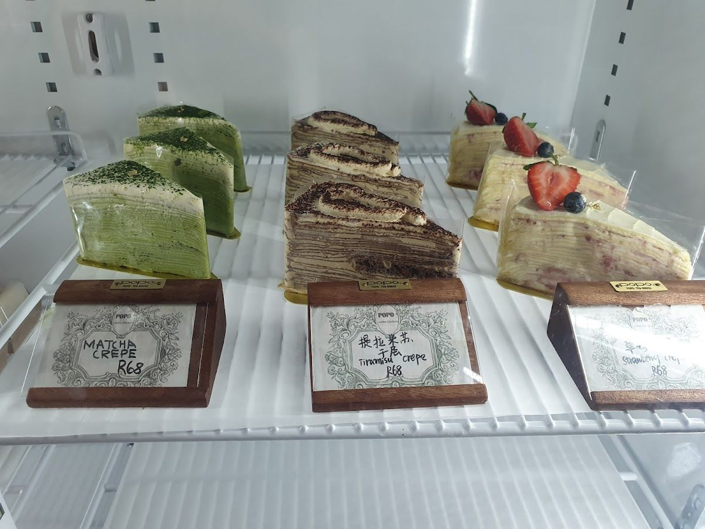
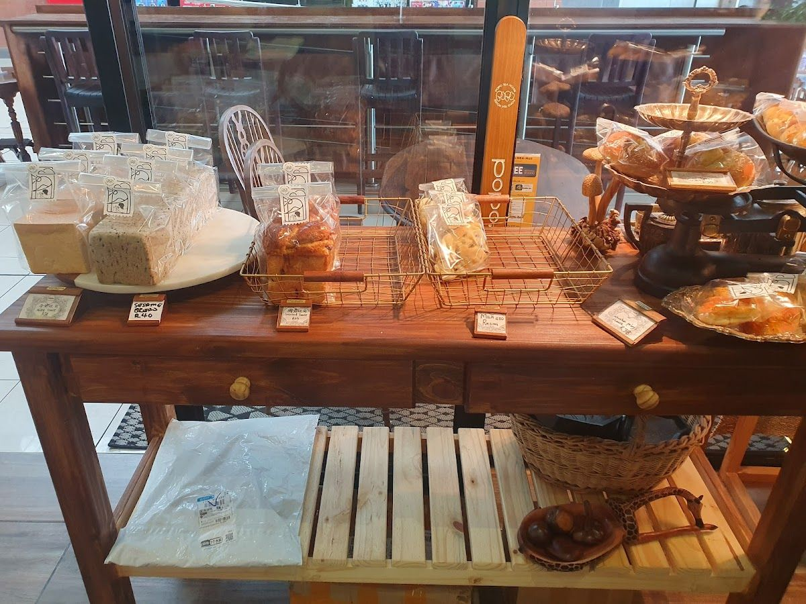
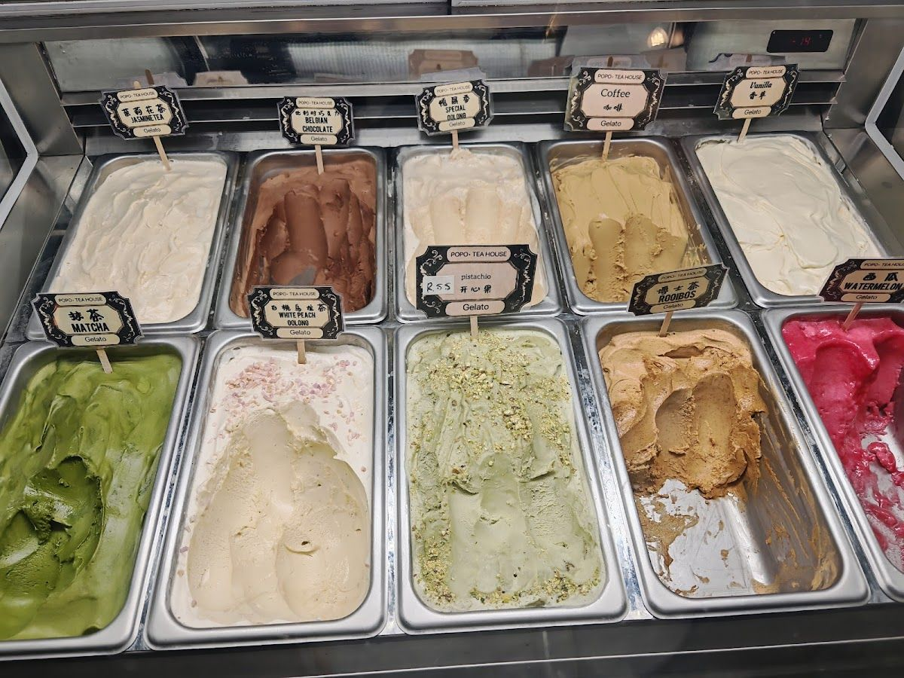
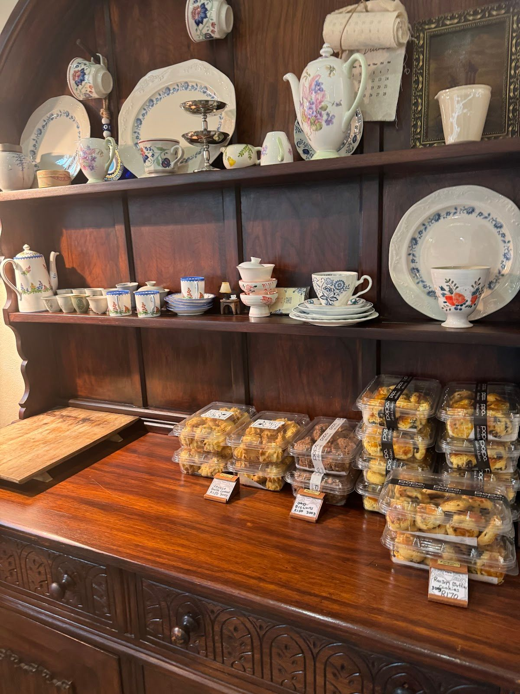

POPO Teahouse coffee & bakery is a local gem situated in the heart of Rivonia, Sandton. Our passion is to bring you a delightful experience with our homemade food and beverages. Whether you're stopping by for a quick coffee or enjoying a leisurely afternoon with friends, we have something special for everyone.
Our journey began with a simple idea — to create a warm and inviting space where you can enjoy freshly baked goods and expertly brewed coffee. Over the years, we've grown into a beloved part of the community, known for our friendly service and delicious offerings.
At POPO Teahouse coffee & bakery, we are committed to using quality ingredients and traditional recipes to ensure every bite is a taste of comfort. Our promise is to deliver a cozy atmosphere paired with exceptional homemade food, crafted with care and served with a smile.
Discover our range of delicious homemade offerings, crafted to bring warmth and joy to every visit.
Experience the rich flavors of our freshly brewed coffee, made from the finest beans sourced from around the world.
Indulge in our selection of freshly baked pastries, breads, and cakes. Each piece is lovingly made in-house daily.
Enjoy unique flavors with our Asian-inspired ice creams, including matcha, taro, and earl grey tea.
Here is what our clients say about us.
"Ordered my birthday cake from Popos and the cake was amazing. We just had some problems with the service and the cake came a day late. Nonetheless the cake was amazing and everyone loved it. Would order again. Just double check to see if they get the time and place right."— Christina, ⭐⭐⭐⭐
"The baked goods that come out of this place are very literally unbelievable. The swiss roll is a personal favourite. The Oreo crepe cake is also divine. I absolutely recommend this place. Expect to eat some of the best dessert of your life."— Ruan van Jaarsveld, ⭐⭐⭐⭐⭐
"Rebranded to POPO Teahouse coffee & bakery from Iris Garden in Rivonia. They have moved to Oriental City Mall on the second floor. The coffee shop is beautifully decorated - vintage, traditional Japanese meet with English-wooden style. They have more variety of their famous sliced miniature Taiwanese cakes, which are light chiffon cakes and freshly made creams. Remember, Taiwanese cakes are not overly sweet and heavy icing/fondant. They use ingredients like fresh fruits and Asian flavours (matcha, taro, earl grey tea, etc.). They also offer coffees, teas, and even Asian-flavoured ice cream. They also have freshly baked breads like milk toast, melon pan bread, raisin bread, etc. You can even order their whole cakes from different sizes and different flavours. You can add them in-store. As for their cake prices, it is a bit higher from R58 per slice, but remember these are chiffon cakes with ingredients that are not your typical toppings. As mentioned, they are instagramable, so you will definitely get some beautiful photos and memorable experience there!!! PS: You can takeaway the cakes, or you can sit down."— Annie Chu, ⭐⭐⭐⭐⭐
"The chocolate cake it to die for! Oolong tea, Jasmin Gelato and seasonal fruit sorbet are a must in summer!"— Kevin Tsai, ⭐⭐⭐⭐⭐
"This place is a hidden gem! My partner ordered a birthday cake from them - it was THE best cake we have ever had. It was so delicious that we went back on Saturday and had some cake and coffee at the teahouse. The service is good with a lovely atmosphere."— Rachel Glass, ⭐⭐⭐⭐⭐




We'd love to hear from you — reach out to us anytime.